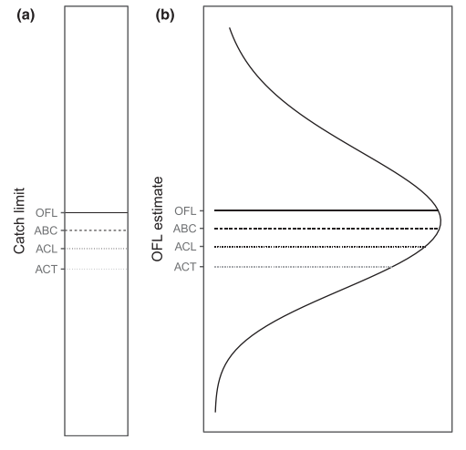
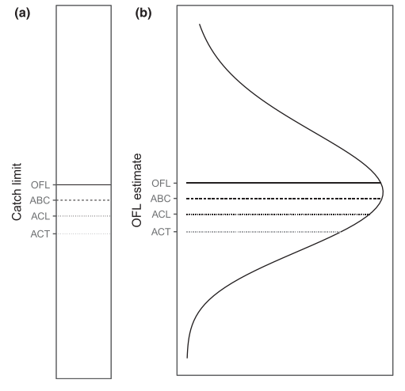

“… modern HCRs are usually not derived from formal, integrated bioeconomic optimization models, but are rather simple, common-sense rules based on expert opinion”

Impact of fisheries index insurance on harvest control rules
Costello Lab meeting
Nathaniel Grimes
Bren School of Environmental Science & Management
Last updated: Jan 16, 2025
Fishers vulnerable to financial shocks from environmental variability
Few financial risk tools to protect against shocks
Index based insurance (IBI) has the potential to address this challenge
My previous research shows IBI creates a moral hazard to fisher harvest decisions
Management is a key tool to combat stochasticity in fisheries
Better managed fisheries more likely to recover and more resilient to biological shocks
Management provides constraints on fisher behavior
Management could reduce demand for insurance as it eliminates biological risk
Managed fisheries are not immune to disasters, insurance could incentive new behavior to assist management
California Red Sea Urchin population recieved federal funding in the recently passed spending bill. 7 years after the determination
Harvest control rules are policy functions that determine catch in a given year
From Free et al. (2023)
Mandates to use Precautionary Principle
Find upper biological limit
Reduce to account for uncertainty
Imply some level of risk aversion

HCR’s not immune to political influence
From Kvamsdal et al. (2016)
“… modern HCRs are usually not derived from formal, integrated bioeconomic optimization models, but are rather simple, common-sense rules based on expert opinion”
Reductions in quota highly unpopular
Fishers need to harvest now
Quotas usually set at the highest allowed limit
Insurance could offset this tension
Research Questions
Unique position in literature
Response of HCRs to uncertainty is well studied and built into the design of biological limits (Reed 1979; Sethi et al. 2005; Kritzer et al. 2019; Yamazaki, Kompas, and Grafton 2009)
Few studies use utility (Lewis 1981; Kelsall, Quaas, and Quérou 2023)
No fisheries insurance papers examining HCR (Mumford et al. 2009; Herrmann et al. 2004; Watson et al. 2023)
Only 1 ag paper examines insurance in a dynamic setting, but they only consider one time decisions, not responses to a yearly state variable (Müller et al. 2011)
Health insurance Within Year Decision Models closest thing in wider literature (Cronin 2019)
Manager acts as sole owner maximizing infinite utility stream of fishers
\[ \begin{aligned} \max_{f_t} \sum_{t=0}^\infty\beta^t\mathbb{E}_t&\left[u(f_t,\omega,b_t,I(\omega))\right]\\ \text{s.t. } b_{t+1}&=G(b_t(1+\omega_{t}) -h_t) \\ h_t&=f_tb_t(1+\omega_t) \\ \omega&~\sim N(0,\sigma^2) \text{ i.i.d} \end{aligned} \qquad(1)\]
Parameters
\(\omega\): Weather Shock (Could impact immediate biomass or growth)
\(b_t\): Level of biomass (state variable)
\(f_t\): Proportion of stock to harvest (choice variable)
\(G()\): Growth Function
Concave utility function \(u'<0 \text{ and } u''>0\)
Insurance contract:
\[ \mathbb{I}[\omega]=\begin{cases} \overbrace{I(\omega)}^{\text{payout}}-\rho(\omega) & \text{if } \omega_t>\bar \omega \\ \underbrace{-\rho(\omega)}_{\text{premium}} & \text{otherwise}\end{cases} \]
Formulate as Bellman and use Value Function Iteration to solve
\[ V_t(b_t)=\max_{f_t}\mathbb{E}[u(f_t,\omega_t,\theta_t,I(\omega_t))+\beta V_{t+1}( G(b_t(1+\omega_t)-h_t))] \qquad(2)\]
Use Policy Function Iteration to solve
Set up grid of 50 biomass state variables
Numerically integrate \(\mathbb{E}[u(f_t,\omega_t,\theta_t,I(\omega_t))+\beta V_{t+1}(G(b_t\omega_t-h_t))]\) for each state variable
Update value function
Repeat until function converges
Do I need to consider insurance/shocks in future state?
Preliminary Results
Future Steps
Solve for optimal insurance
Current model may be over or under providing insurance
Quick check on value functions seem like insurance increases converged value slightly
How do these small, but subtle differences in the HCR play out in overall stock health
Calibrate with a real-word fishery (Pacific Sardine, Skipjack, Anchoveta)
References